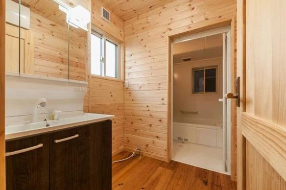
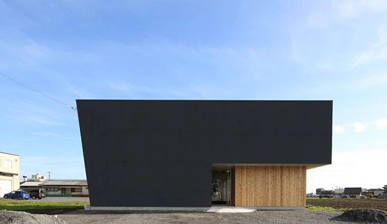
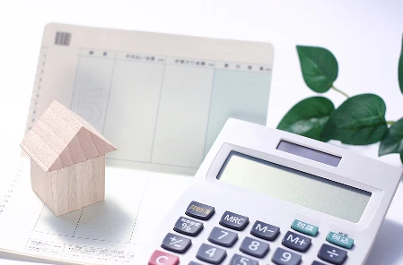
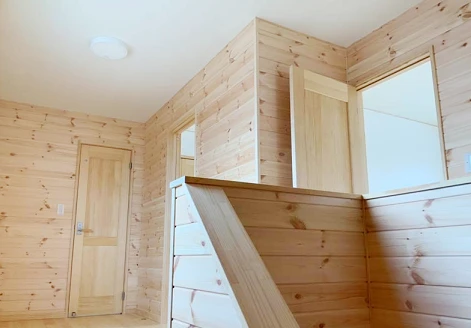

これからの家づくりの考え方
こんにちは。富山で自然素材にこだわるホンモノの家、フジ創アイノスです。 ✔これからの家づくりの考え方 これから日本が迎える社会は、少子化であり超高齢化社会です。 その影響を受け、今後は、社会保険料・税金アップによる可処分
続きを読む →FUJISOU AINOS JOURNAL
家づくりのこと、暮らしのこと。
日々の想いを、お伝えします。
新しい記事から 28・40ページ
こんにちは。富山で自然素材にこだわるホンモノの家、フジ創アイノスです。 ✔これからの家づくりの考え方 これから日本が迎える社会は、少子化であり超高齢化社会です。 その影響を受け、今後は、社会保険料・税金アップによる可処分
続きを読む →こんにちは。富山で自然素材にこだわるホンモノの家、フジ創アイノスです。 ✔住宅ローンは単利？複利？ 金利は預ける時も借りる時もついてくるものですが、借金の中で最も大きい額であり、最も期間が長くなる住宅ローンは、複利で金利
続きを読む →
計画的にお金を増やしていくには、自分の収入を上げることはもちろん、お金の仕組みを理解し資産運用していくといいですね。 そのためには、「金利」について理解しておく必要があるし、家づくりをする際に、運用資金を捻出する工夫をし
続きを読む →
こんにちは。富山で自然素材にこだわるホンモノの家、フジ創アイノスです。 今日はクリスマスです。 日本ではよくイブは恋人同士で過ごし、クリスマスは家族でケーキを食べたり、子どもにプレゼントを渡したりします。 本来はキリスト
続きを読む →
こんにちは。富山で自然素材にこだわるホンモノの家、フジ創アイノスです。 今日はクリスマスイブ。 子供たちはサンタさんが来てくれるのを楽しみにしていますね。 サンタさんはフィンランドのサンタクロースヴィレッジに住んでいるそ
続きを読む →こんにちは。富山で自然素材にこだわるホンモノの家、フジ創アイノスです。 家の大きさは、単純に建築費用を左右するだけじゃなく、それに付随して様々な費用も左右します。 例えば、40坪の家と25坪の家では、冷暖房の消費電力も違
続きを読む →
こんにちは。富山で自然素材にこだわるホンモノの家、フジ創アイノスです。 寒い日が続いていますが、風邪などひかれていないでしょうか？ 冷えは万病のもと。暖かくして元気に過ごしましょう。 暖かい家の大切さ 冬になれば床が凍る
続きを読む →こんにちは。富山で自然素材にこだわるホンモノの家、フジ創アイノスです。 前回の続きで、家にお金をかけ過ぎてしまう理由についてお話します。 理由その1：みんながそうしているから 家を建てようと思うと、誰もが住宅展示場や完成
続きを読む →
こんにちは。富山で自然素材にこだわるホンモノの家、フジ創アイノスです。 ここ最近、コンクリートなど、建築資材の価格が徐々に上がってきています。 また、国が指定する耐震や断熱に対する基準が厳しくなったことから、以前に比べ、
続きを読む →
こんにちは。富山で自然素材にこだわるホンモノの家、フジ創アイノスです。 住まいと健康は非常に深い関係があります。 健康には「室内の空気環境」が大切です。 空気を決める要素は、温度、湿度、清潔さです。 1温度 室内・室間の
続きを読む →
こんにちは。富山で自然素材にこだわるホンモノの家、フジ創アイノスです 富山では本格的に雪が降ってきました。 この寒い冬の時期に気を付けなければいけない事故にヒートショックがあります。 温度の刺激による血圧の急激な変動のこ
続きを読む →
こんにちは。富山で自然素材にこだわるホンモノの家、フジ創アイノスです。 前回お話しした敷地の場合、南に建っている建物の影になるところに配置せざるを得ない部屋は、南側にどれだけ大きな窓をとったとしても、光が入ってくることは
続きを読む →
こんにちは。富山で自然素材にこだわるホンモノの家、フジ創アイノスです。 例えば、土地面積が50坪以下と小さく、かつ、敷地の南側に2階建ての家が建っている土地で家を建てなければいけないとしたら、どのように家を建てて欲しいと
続きを読む →
こんにちは。富山で自然素材にこだわるホンモノの家、フジ創アイノスです。 本日１２月１１日は、「胃に良い」にちなんで「胃腸の日」です。 現代人はストレスが多く、生活習慣も乱れやすいので、デリケートな器官の胃腸は荒れやすくな
続きを読む →
こんにちは。富山で自然素材にこだわるホンモノの家、フジ創アイノスです。 先のことまで考えた資金計画を 家づくりをする時には、必ず資金計画をしないといけないのですが、その際には今の状況だけを考えるのではなく、もっと先のこと
続きを読む →
こんにちは。富山で自然素材にこだわるホンモノの家、フジ創アイノスです。 "厚生年金の加入要件を満たしながら、国民年金にしか入っていない労働者が約156万人に上ることが、厚生労働省の推計で分かった。 厚生年金に加入しないと
続きを読む →
こんにちは。富山で自然素材にこだわるホンモノの家、フジ創アイノスです。 お風呂場に置く椅子の真ん中には、なぜ穴が空いているのかご存じですか？ 実は、真ん中に穴を開けることで、上からかかる荷重をうまく分散させて、強度を増し
続きを読む →こんにちは。富山で自然素材にこだわるホンモノの家、フジ創アイノスです。 12月になりだんだんと天候の悪い日が増え、寒さも厳しくなってきました。 今回は家の室内温度と健康についてお話します。 寒い家は健康被害を起こしやすい
続きを読む →
こんにちは。富山で自然素材にこだわるホンモノの家、フジ創アイノスです。 住宅ローンに対する認識を厳しく持つ 家を建てるとなると、誰しもが住宅ローンを利用すると思います。 ですが、認識しておかないといけないことは、住宅ロー
続きを読む →
こんにちは。富山で自然素材にこだわるホンモノの家、フジ創アイノスです。 家を持つということは、ただ単純に土地や建築にお金がかかるだけじゃなく、 それに付随して様々な費用が必要となるし、維持していくためにも様々な費用が必要
続きを読む →
こんにちは。富山で自然素材にこだわるホンモノの家、フジ創アイノスです。 家の価格は、面積に最も左右されます。 面積が大きくなれば、家の価格は高くなるし、面積が小さくなれば、家の価格は安くなるということですね。 家の品質や
続きを読む →こんにちは。富山で自然素材にこだわるホンモノの家、フジ創アイノスです。 冬は一年中でもっとも結露が発生しやすい季節です。 急に温度が下がり、空気中の水蒸気が水になるのが結露です。 住宅に結露は大敵です。 結露を放っておく
続きを読む →
こんにちは。富山で自然素材にこだわるホンモノの家、フジ創アイノスです。 現在、賃貸に住んでいるあなたは一生にいくら家賃を払うのでしょうか。 30歳の人が85歳まで毎月家賃を払うと考えると「残り55年間」払い続けなければな
続きを読む →
こんにちは。富山で自然素材にこだわるホンモノの家、フジ創アイノスです。 前回の記事にもありましたが、アイノスでは良いものをより安く供給して公平な見積もり金額を出したいと考えています。 今回は、自然素材の家を低価格で提供で
続きを読む →